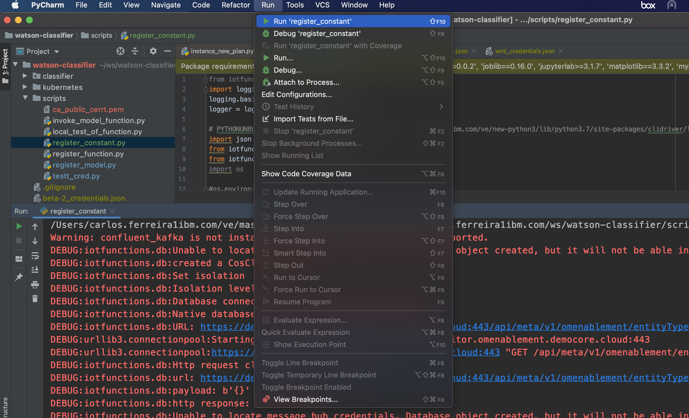
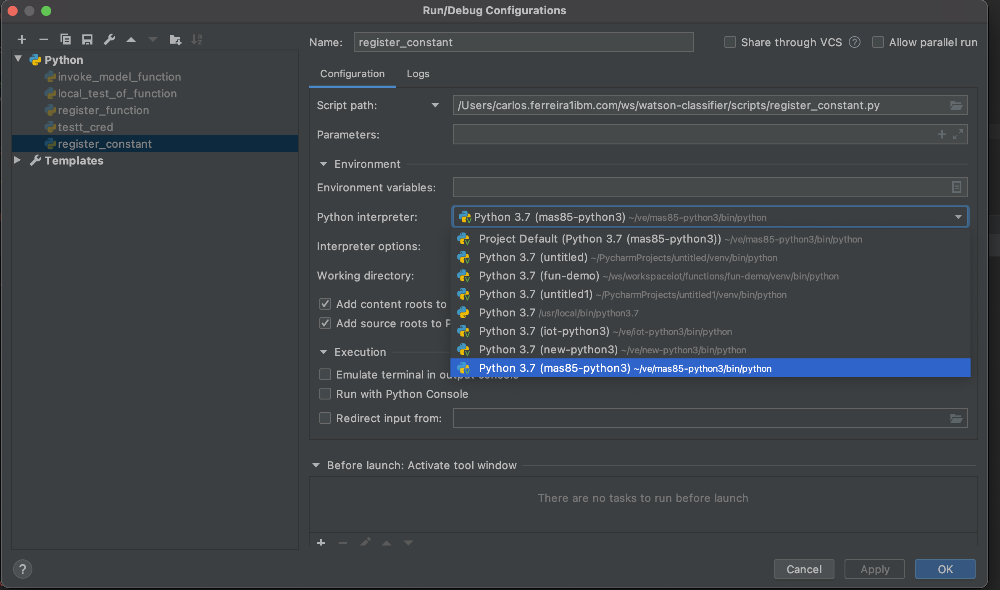
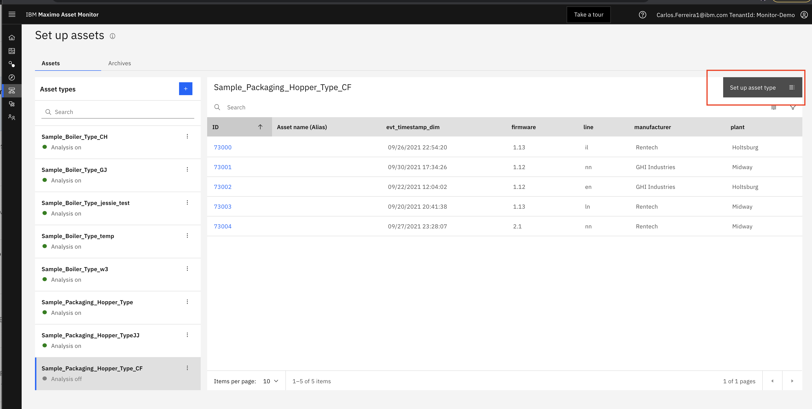
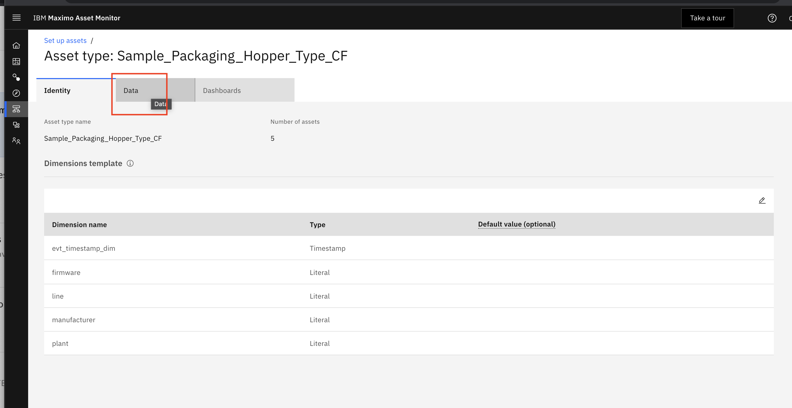
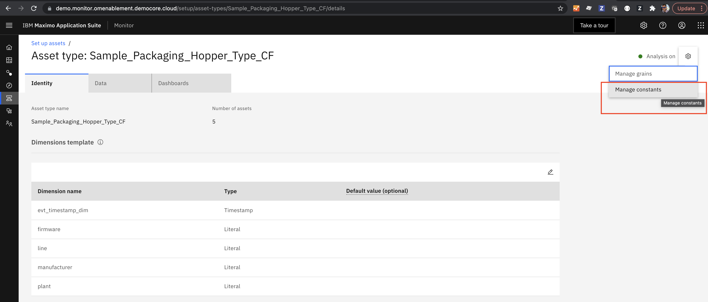
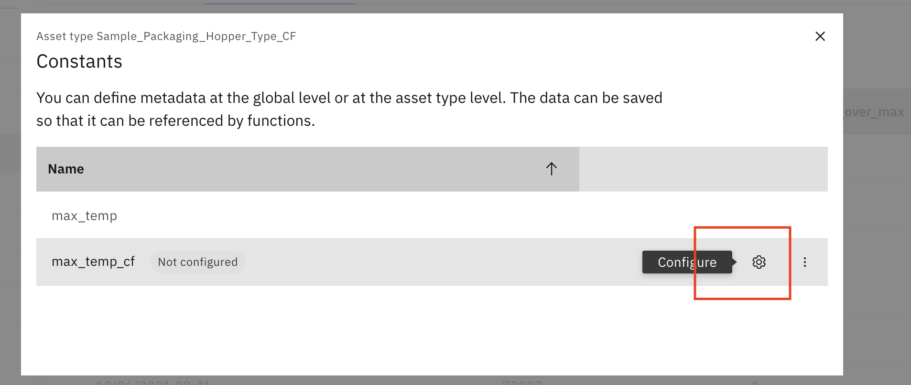
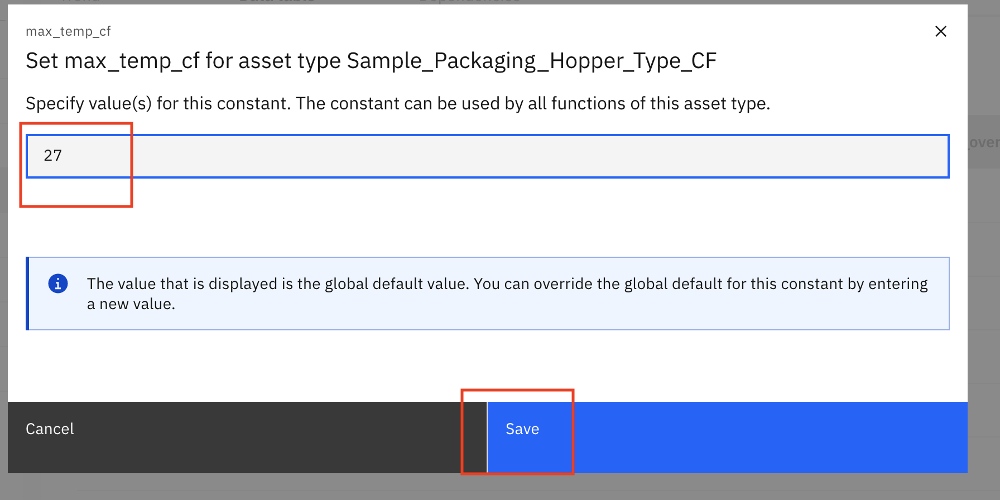
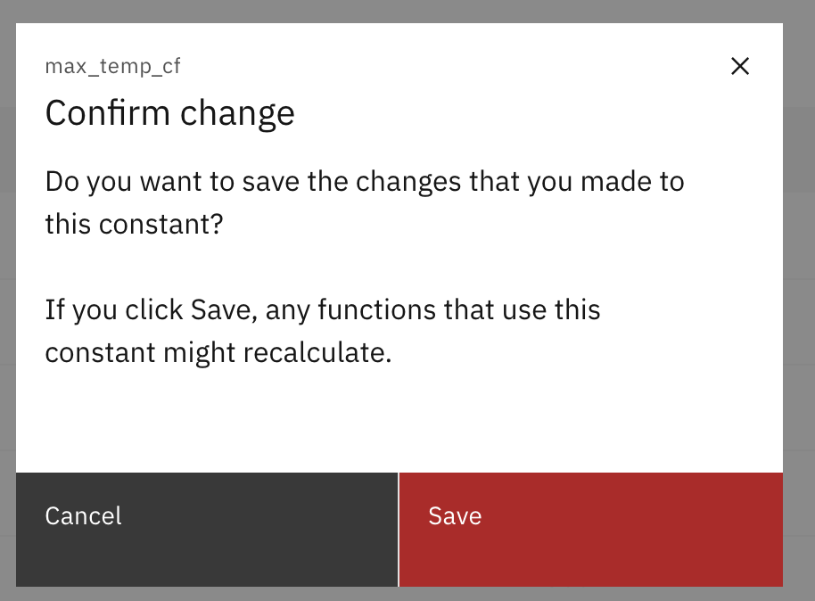

Objectives
In this Exercise using Monitor you will learn how to add a constant for the maximum allowed ambient temperature. You will:
- Register Constant using a script
'register_constanty.pyusing IOT Functions SDK - Assign a value to the
max_temp_yourinitialsconstant of 27.
The ambient temperature where th Hopper Asset is located should exceed a temperature is above 27 degrees Celcius. The food packaged has a shorter shelf life when it is packaged at temperatures higher than that. A remote operational support teams monitor will monitor the packaging Hooper to ensure it is operating within the required operating ranges and without anomalies.
The constant will be used to specify the maximum temperature allowed in all packaging processes to ensure regulatory compliance.
Using a constant will also make it easier later to update any functions or alerts that reference the constant. By simply modifying the value of the constant all the functions and alerts will use the new value for all new calculations.
Before you begin:
- You have completed the pre-requisites required for all Exercises
- You have completed the prior exercise in this lab.
Register a Constant in Monitor
In this exercise you will quickly create a constant named max_temp_yourinitials a that you will use in next exercises.
-
Define your constant. You will name yours
max_temp_yourinitialsso that it doesn't conflict with the constants created by others. -
Git clone the repository that has the code below. If you don't have access email carlos.ferreira1 @ibm.com You will use the code from this repository in other exercises. From the terminal on your desktop type:
''' git clone github repo provided by your instructor cd watson-classifier '''
-
Ask the instructor for your credentials_as.json file or create your own using the instructions in "Establishing a Connection" section of the Monitor documentation. Establishing a Connection
Your credentials file should be structured in JSON as follows:
'''
{
"tenantId": "yourtenant",
"_db_schema": "your_dbSchema",
"db2": {
"username": "your_dbuser",
"password": "your_dbpassword",
"databaseName": "your_databaseName",
"security": "SSL",
"port": 32551,
"httpsUrl": "https://cp4d-cpd-cp4d.yourdomainURL",
"host": "yourdomainURL without HTTP prepended"
},
"iotp": {
"asHost": "yourtenant.api.monitor.your_dbSchema.yourlusterdomain:443",
"apiKey": "vourAPIKey",
"apiToken": "yourAPIToken"
}
}
'''
-
Save your credentials_as.json file to in the project root directory
watson-classifier. -
Start PyCharm select
FileandOpennavigate to your project root directorywatson-classifierand open the project -
The script
register_constanty.pyprovided in thewatson--classifierGithub project uses IOT Functions SDK to create a constant. IOT Functions SDK In the PyCharm project tab, navigate to and expand the scripts folder. Right click onregister_constant.pyand select therunmenu. 
Script code:
'''
from iotfunctions.db import Database
import logging
logging.basicConfig(level=logging.DEBUG)
logger = logging.getLogger(__name__)
import json
from iotfunctions.db import Database
from iotfunctions.ui import UISingle,UIMulti
import os
logger = logging.getLogger(__name__)
#Connect to the service
with open('../credentials_as.json', encoding='utf-8') as F:
credentials = json.loads(F.read())
db_schema = None
db = Database(credentials=credentials)
#Connect to the service
db = Database(credentials = credentials)
#Define how the constant is represented on the UI using UISingle
max_temp_cf = UISingle(name='max_temp_cf',
description='Ensure temperatures does not exceed max_temp_cf',
datatype=float)
#Register the constant using the database object
db.register_constants([max_temp_cf])
'''
-
The script will give you errors because you haven't yet setup the virtual environment. From PyCharm menus select
Runandedit configurations. Make sure to pickrunandedit configurationfor theregister_constant.py -
Make sure you have setup your virtual environment in Pycharm. Once you have you can select the name of the virtual environment in PyCharm. In the projet window click on
register_constant.pythen from the Pycharm menu selectrunandedit configuration

Assign a Constant a Value in Monitor
In this exercise you will quickly create a constant named max_temp_yourinitials a that you will use in next exercises.
-
Set the value of the constant from the UI. Login to Monitor.
-
Select
Setup Assetstab, search forSample_Packaging_Hopper_Type_yourinitials. Click on yourAsset Typeand click onSetup Asset Typebutton.
 -
Click on the
datatab,
 -
Click on
gearicon and selectManage constantsmenu option  -
A list of constants is displayed. Select the constant named
max_temp_yourinitialsClickConfigure.  -
Assign a value of
27and clickSave.  -
Click
Save. 
Next Step
You now have constant for the max_temp_yourinitials that you can use in your functions and alerts in your Device Type.
In the next exercise you will create a PythonFunction will use the constant for the max_temp in Celcius that the
ambient temperature to check the ambient temperature hasn't been exceeded.
OPTIONAL - Unregister a Constant in Monitor (Optional)
Optionally you can write a unregister_constant.py script and run it after you have completed all the labs. Unregistering the constant will remove constant from Monitor. Any calculation that uses this constant will stop working and cause the Monitor pipeline calculations to stop.
Example code:
```
#Import packages and libraries
import logging
logging.basicConfig(level=logging.DEBUG)
logger = logging.getLogger(__name__)
import pandas as pd
import json
#Import these classes from IoT Functions
from iotfunctions.db import Database
from iotfunctions.ui import UISingle,UIMulti
#Connect to the service
with open('credentials_as.json', encoding='utf-8') as F:
credentials = json.loads(F.read())
db_schema = None
db = Database(credentials=credentials)
#Connect to the service
db = Database(credentials = credentials)
#Unregister the constant using the database object
db.unregister_constants(['max_temp_yourinitials'])
```